Mock Ups
This is where the Idea for 'Mood Matcher' was born. Mood matcher is a website where users can find a space that will accommodate whatever mood they're in and show them interesting and relaxing content that will be defined by the tone of their mood. This is a mock up home page: 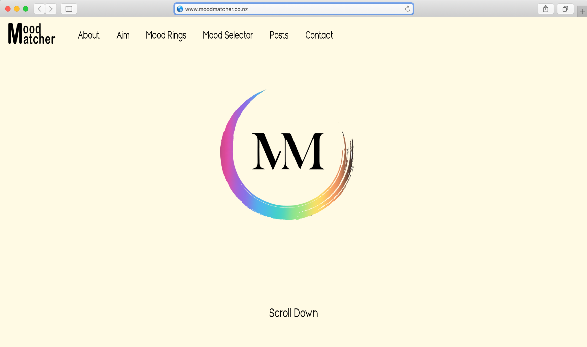
Logo
The logo plays an important part in this website, as the decoratively designed features throughout the website are based off this logo. I made various iterations of this design however the logo I originally had is the most effective. I continued the use of the same logo from project one because I think the circle represents the ring well and the colours it can change to. The 'MM' in the middle represents 'Mood Matcher' which is important to include for branding and identification. 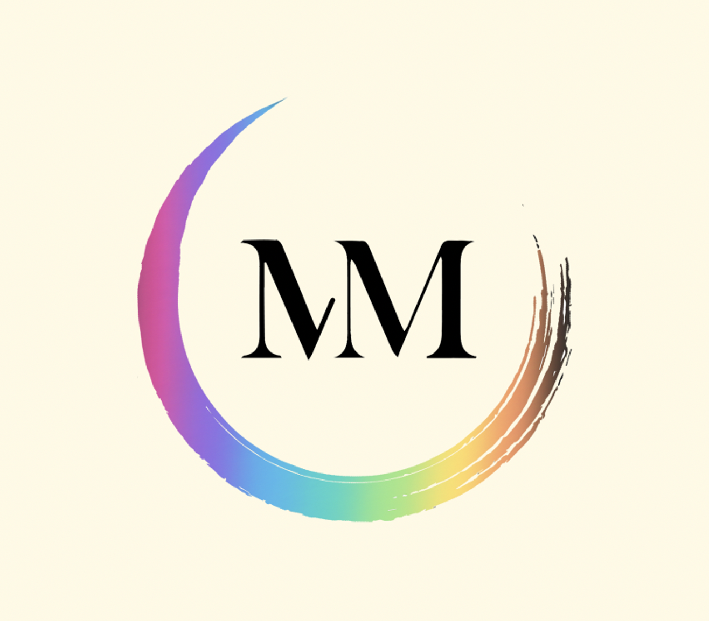
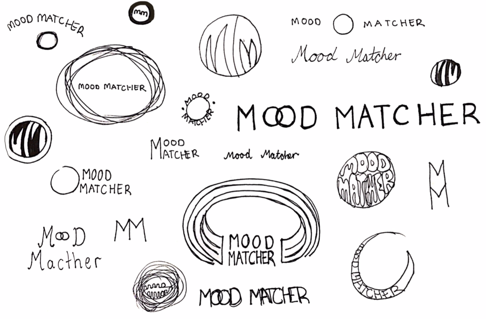
Intent
The intent of the 'Mood Matcher' will be explained at the top of the website. This will be portrayed in a swipe across box: 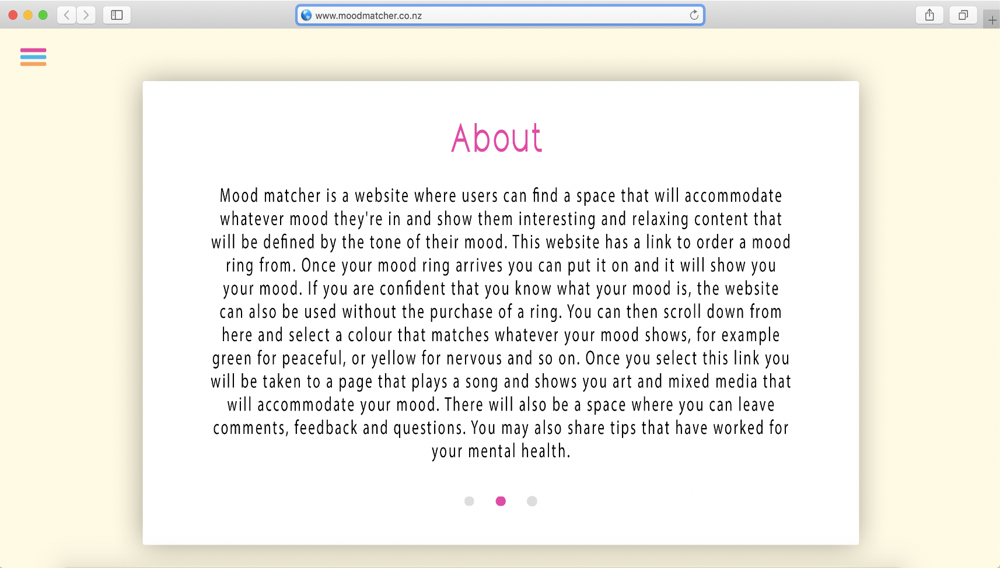
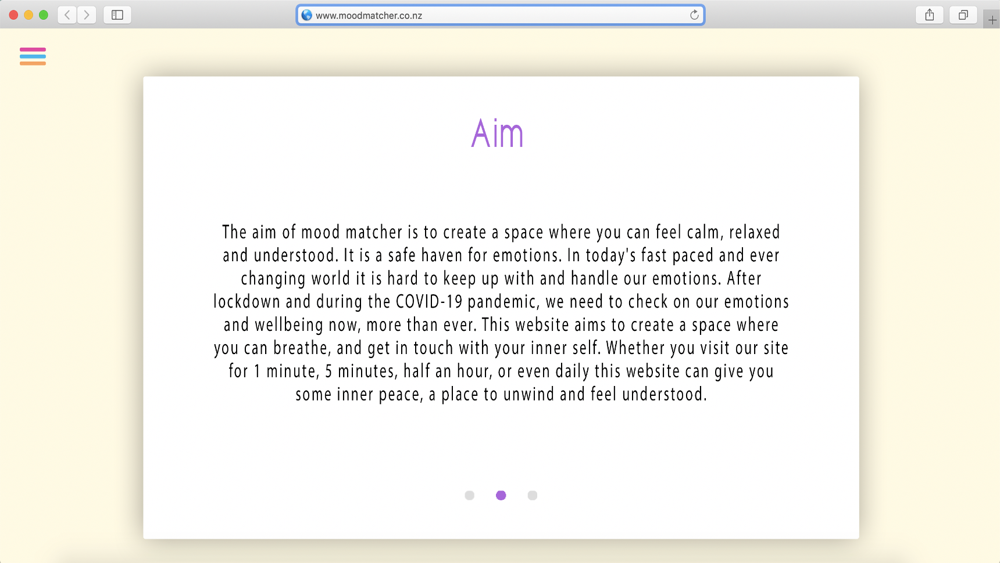
Week 2
The contents of the following sections were developed in week 2 of my development process.
Mood Rings
The website will have a link to order a mood ring from. Once the user's mood ring arrives, they will put it on and it will show them their mood. If users are confident they know what their mood is, the website can also be used without the purchase of a ring. I chose Natural Windsor Health to order the ring from. Any mood ring would work for the website, however this is the one I selected and will recommend through the website for purchase, due to it being a New Zealand business and very affordable. The ring also arrived very quickly after it ordered it (within 1-2 working days) and it came in very aesthetically pleasing packaging. I already had a couple of mood rings before this but I needed to buy one that I could recommend through the website as well as review the purchasing process and the ring itself. I wanted to have some professional photos of the mood ring on my website so I set up a photo shoot at my house once the ring had arrived. 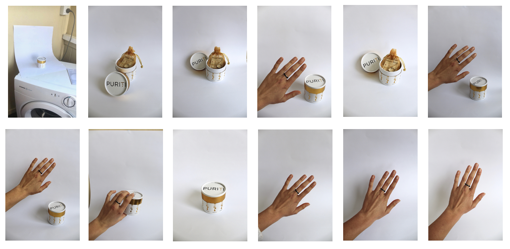
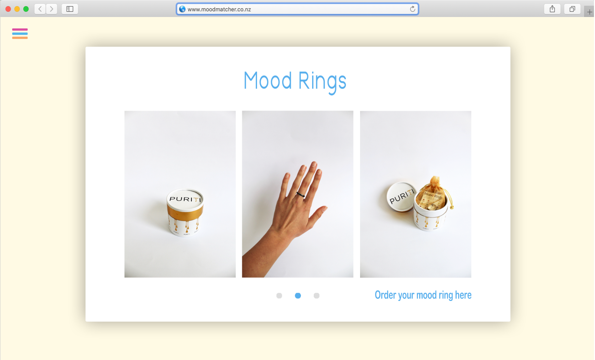Mood Selector
Users can then go onto the Mood Matcher website and select a link that matches whatever their mood shows, for example green for peaceful, or yellow for nervous and so on. Once they select this link they will be taken to a page that shows them songs and mixed media that accommodates their mood. This is an example of what may come up for 'Black: Stressed'. By clicking one of these circles the user will be re-directed to the selected song or mixed media. This content would be updated monthly based on what users of the website suggest, as well as updated research. I chose this content based off asking those around me what they found helped when they were stressed, as well as going off my own experience. 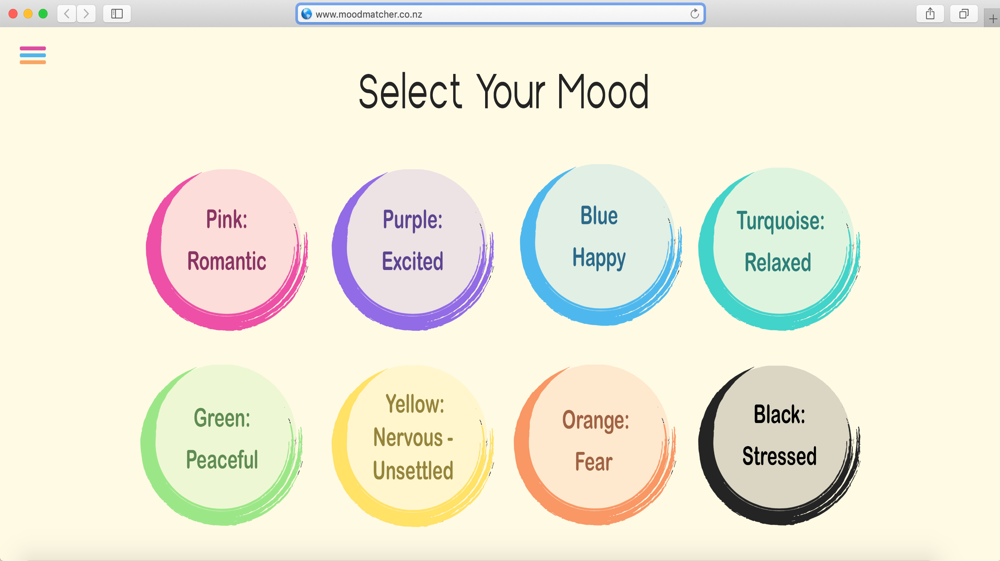
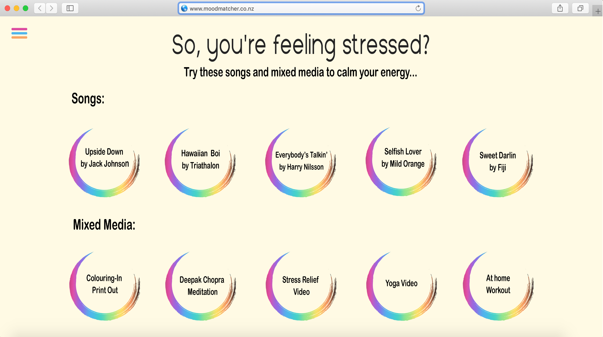
Week 3
The contents of the following sections were developed in week 3 of my development process.
Contact Form
There will also be a space where users can leave comments, feedback and questions. They may also share tips that have worked for their mental health. 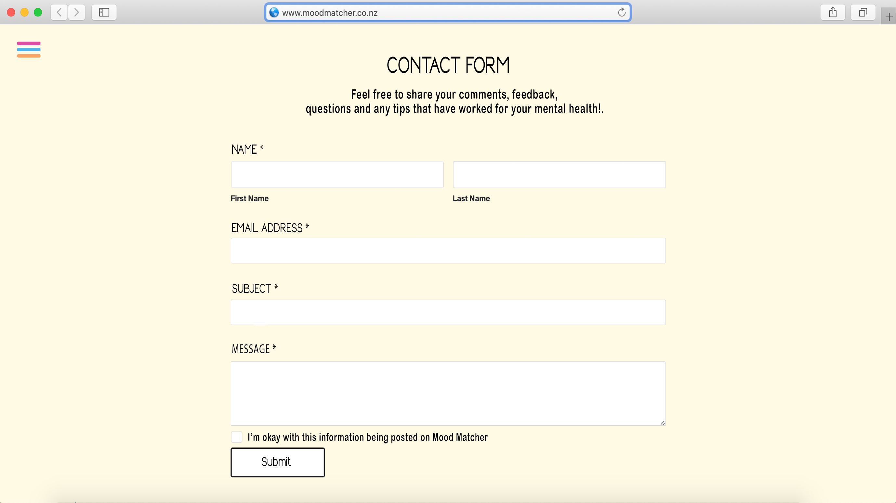

User Posts
These comments submitted through the contact form would then be reviewed and posted weekly with the user's consent. Here are examples of what these posts would look like:
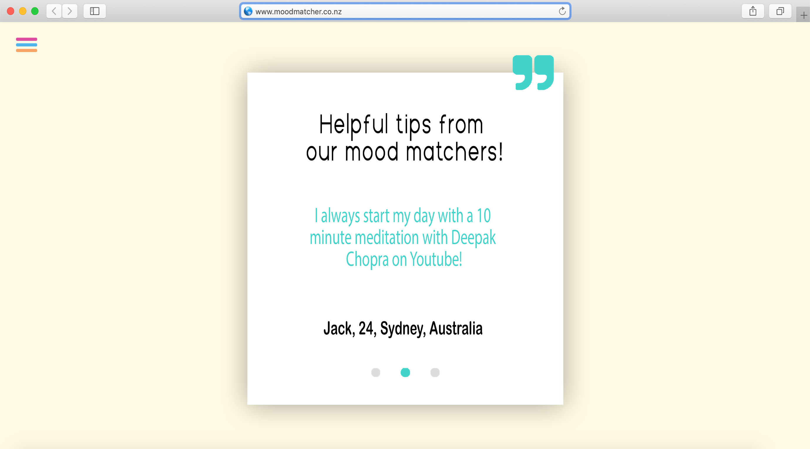 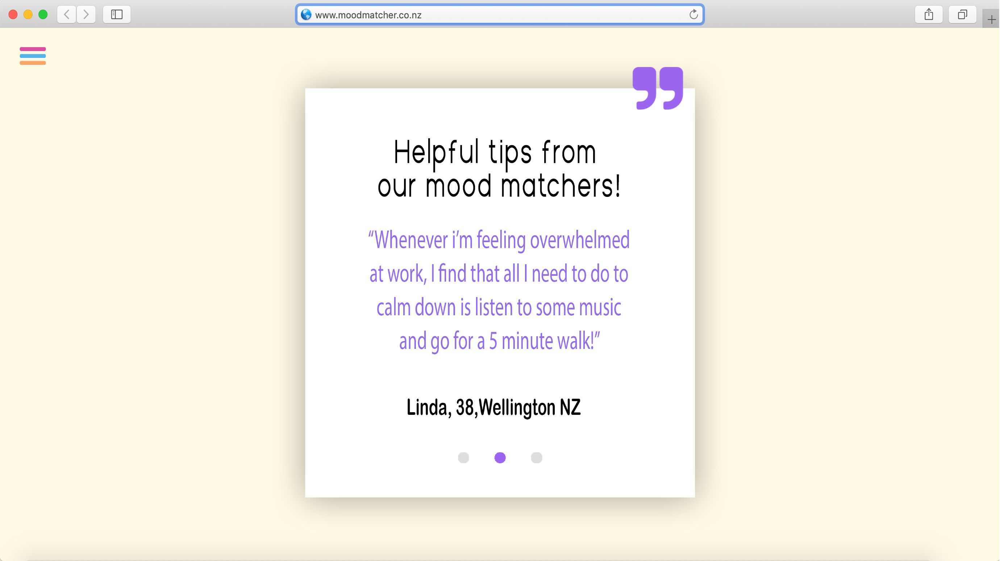Drop Menu
Through the process of scrolling through the website, in-order for users to return to which ever page they would like to visit, there will be a drop menu to provide full and easy access to the whole website.
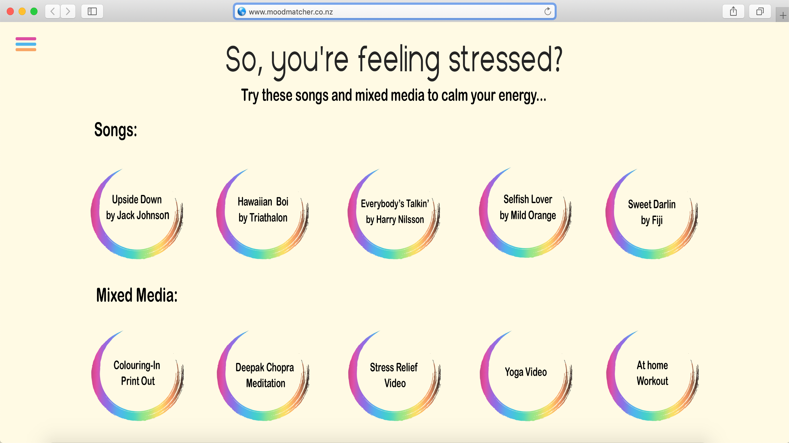 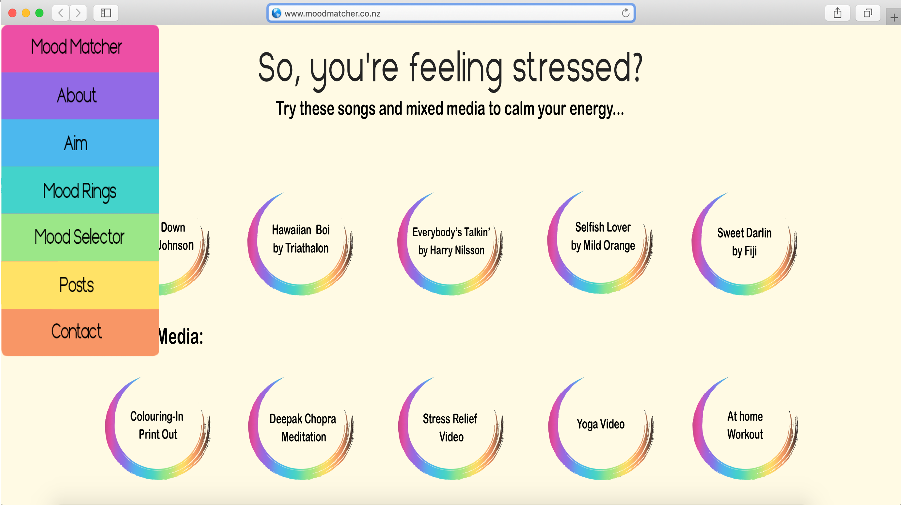
Week 4
The contents of the following sections were developed in week 4 of my development process.
Demonstration
To create a demonstration of how the website would work, I needed to learn how to use the Adobe XD software. Here are some images of tutorials and the prototype creation process, as well as a completed video demonstration.
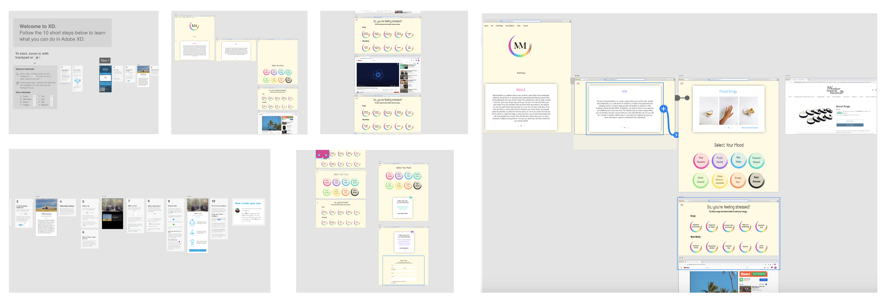Audience
The browser extension will be available for everyone who has access to the internet through a web browser. This ranges from all races, ages, genders, and occupations. This online accessibility is perfect for the COVID-19 pandemic.
Visual Direction
The visual direction for mood matcher is to have a professional and clean aesthetic, while also conveying a relaxed and calming tone. I will keep the style very minimalistic due to this website being aimed at being a calming stress relief and online safe-haven. I want it to be as simple as possible while still serving its function, as to not overwhelm people when they visit the site. In contrast to many websites that have pop ups and unnecessary components which can overwhelm users. It will be approachable, friendly and make the user feel like they are in a safe and positive place. The colour palette will match the colours of the mood ring so that users can visually connect their mood with the colours. Visual aesthetics will be focused on throughout the website with typography not being a key focus. However I will be using Camaro Sans for headings, and Arial Rounded MT Bold for body text. The general aesthetic of the website will be organic and curved.
Website Templates
The following links are website templates that I have considered using in the creation of the mood matcher website, including what I like about them: Background colour, Menu bar - home page - 4 sections across, Base Structure, User Comments, Side/Top Menu Bar, User Comments - Base Structure, Base Structure, Base Structure, Base Structure, Top Bar - Boarder, Message Bubble - User Feedback - Comments - Top Section, Base Structure - User Feedback and Comments - Menu Bar
Reflection
On reflection, throughout this project I have learnt many new techniques when it comes to the use of Adobe XD. It is definitely software that I am interested in learning more about and increasing my skill levels with. I have also learnt more about coding and publishing websites which I struggled with, however I am glad to have learnt. I believe it would be a big challenge for me to create this prototype into a functioning website however I think I would be able to do it.